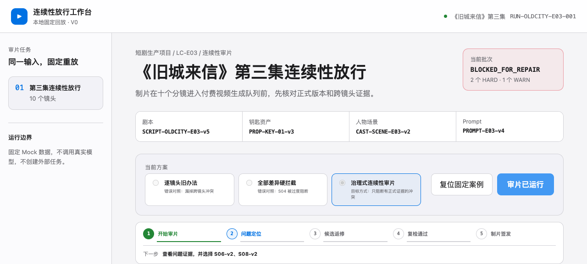
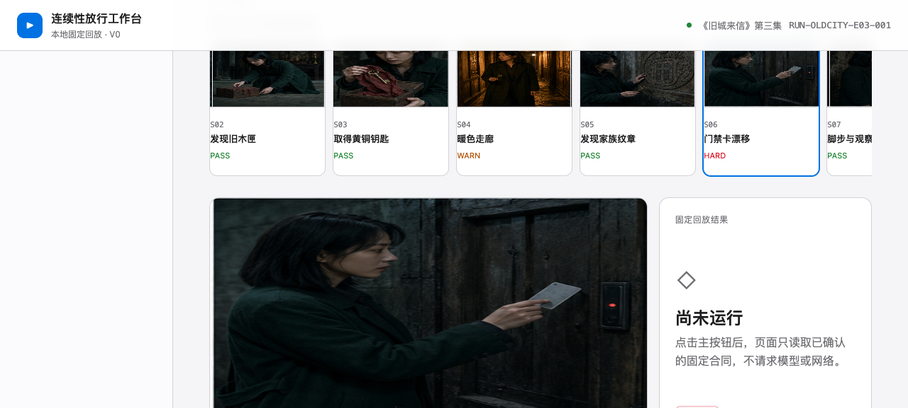
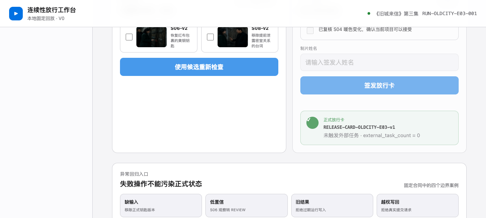

梁志瑜.
让复杂协作和判断，
长成能被验证的产品。
把模糊的工作做成能对账的单据。我把跨部门协作、人工审查和审片判断拆成规则、门禁与验收标准，交给 Agent 和 Skill 执行，人保留裁决权。
四个系统共有的做法
- 给 AI 读什么，由文件决定，不由对话决定——输入清单 / 只读上一步产物 / 真值锁定 / 公开题面与黄金合同隔离
- 确定性的动作归脚本，语义判断归模型——hook 与巡检 / 门禁与召回 / 阈值与版本校验
- 拍板归人——回执确认才归集 / L2 请示 / 具名签发 / 候选准入确认
- 先想怎么验，再动手——风险应对 迭代 / 封存池盲测 / 固定回归 + 坏策略对照 / 评测集校准与冻结
关于我
| 教育 | 香港理工大学 · 公司管治硕士 · 2025.9-2026.11 |
| 工具 | Cursor · Codex · Claude Code ｜ Axure · XMind · ProcessOn ｜ Excel |
| 证书 | 初级会计师 · 计算机三级 · 普通话二甲 ｜ 雅思 6.5 · CET-6 |
| 此外 | 院辩论队队长，组织跨院、跨校辩论赛；带队完成校级科研论文；"互联网+"校赛三等奖 |
今天吃什么？
走进对布对厨房，翻翻我的菜单，试着用家里的食材找一道菜。
多人协作，各自的 Agent，共同的文件规则
跨角色活动需要共同推进，共识却散落在群聊、文档和会议中。我主导搭建多人协作工作区，将输入依据、任务交接和确认记录组织为可追溯的文件。
前提：工作区里有什么，决定 AI 能干什么
Agent 没有记忆。每次开工，框架到工作区里找文件，找到再喂给模型；工作区里有什么，它就能干什么。上下文是稀缺资源：别人的过程稿进了你的上下文，错的口径就跟着进了产出。
所以多人协同的第一原则不是"共享"，是隔离——每个人的 AI 只带该读的东西干活。
为谁而建：三圈人
为谁而建：三圈人
懂 AI 的人
建治理文件、模板、脚本、提示词库；整套基础设施
直接参与的人
在工作区里真干活，但需要被降门槛：固定目录、一键建区、提示词复制即用
相关人员
不进工作区，只读看板与知识区；参加会议
三圈人的完整职责展开明细
| 内圈 | 懂 AI 的人 | 建治理文件、模板、脚本、提示词库；整套基础设施 |
| 中圈 | 直接参与的人 | 在工作区里真干活，但需要被降门槛：固定目录、一键建区、提示词复制即用 |
| 外圈 | 相关人员 | 不进工作区，只读看板与知识区；参加会议 |
越靠内，建设责任越重；越靠外，工作区越要迁就他的习惯。后面每做一个部件，先问它给哪一圈用。
空间结构：一座大厅，N 座私宅
公共仓与个人仓，边界在哪里
身份与规则
成员名册 · 协作契约（命名规范 · 任务包标准 · 写回权限 · 模板）
进度层
当前推进 · 工作台区 ×N · 任务看板 · 三本索引 · 决策记录
交换层
每人一对出件箱 / 收件箱——唯一的跨人通道
知识层
静态知识（背景 · 目标 · 术语）· 动态知识（会议三层 · 归集产出）
工具层
skills · 自动化脚本 · hooks · 提示词库
归档层
阶段收口后整段冻结只读
个人仓 × N
输入（个人知识）· 任务包 ×n · 生效区 · 归档 · 工作日志 · 本仓 AGENTS.md。每座私宅配私有远端，过程私密。连廊只通 4F 大堂。
公共仓是一座六层大楼，越往上越"管人"，越往下越"存事"：
公共仓六层明细展开明细
| 门楣 | README（人入口）· AGENTS.md（AI 入口）· 公告栏 | |
| 6F | 身份与规则 | 成员名册 · 协作契约（命名规范 · 任务包标准 · 写回权限 · 模板） |
| 5F | 进度层 | 当前推进 · 工作台区 ×N · 任务看板 · 三本索引 · 决策记录 |
| 4F | 交换层 | 每人一对出件箱 / 收件箱——唯一的跨人通道 |
| 3F | 知识层 | 静态知识（背景 · 目标 · 术语）· 动态知识（会议三层 · 归集产出） |
| 2F | 工具层 | skills · 自动化脚本 · hooks · 提示词库 |
| 1F | 归档层 | 阶段收口后整段冻结只读 |
个人仓是私宅：输入（个人知识）· 任务包 ×n · 生效区 · 归档 · 工作日志 · 本仓 AGENTS.md。每座私宅配私有远端，过程私密。连廊只通 4F 大堂。
两个仓挂在同一个 Agent 项目下，AI 只读这两处。
上下文怎么控：两跳装载
两跳装载，输入清单锁定边界
AGENTS.md ×2
公共宪法 + 本仓规程。只装原则和“索引在哪”，保持精简，每会话注入
三本索引
文件索引（按文件查，标效力级）· 关键词索引（按事查）· 人物索引（按人查）+ 反链表
只读正本
生效区 · 知识区 current · 交换区正件；草稿、history、他人仓被效力级挡住
输入清单
任务包里的输入清单是一次查询的固化：建包时查一次，人确认，此后 AI 只读清单内文件。换 AI、换会话，边界不变。
两跳装载与文件效力明细展开明细
| 入口 | AGENTS.md ×2 | 公共宪法 + 本仓规程。只装原则和"索引在哪"，保持精简，每会话注入 |
| 中间 | 三本索引 | 文件索引（按文件查，标效力级）· 关键词索引（按事查）· 人物索引（按人查）+ 反链表 |
| 文件 | 只读正本 | 生效区 · 知识区 current · 交换区正件；草稿、history、他人仓被效力级挡住 |
任务包里的输入清单是一次查询的固化：建包时查一次，人确认，此后 AI 只读清单内文件。换 AI、换会话，边界不变。
三条纪律：原则与事实分离（AGENTS 小而稳，事实在活源）；一正本一倒排（术语表是正本，关键词索引是机器生成的倒排）；引用写路径不摘抄（摘抄就是制造第二正本）。
协作怎么变成文件动作
任务包五件套，人人同构：任务说明 · 输入清单 · 待裁决事项 · 过程记录 · 工作产出，加一份 任务状态.yaml。AI 草稿全在任务包内，经本人确认才升入生效区。
投递 / 回执 / 退回：要别人办什么，写一份协同单投到对方收件箱；办完投一份回执；办不了投退回单，必须给可行替代。协同单四态从交换区文件反推——文件在，状态才在。
写回三层：自动写回 = 本人仓过程件 + 公共仓本人工作台 + 脚本产物；确认后写回 = 生效、投递、归集、决策；禁止写回 = 他人仓与出件箱、治理文件、受限业务参数、绕过脚本手搓。
受限信息只写指引：受限业务参数不在共享文件里展开，只保留责任人与访问指引；具体内容按权限隔离。
确定性归脚本
| init_member | 一键建个人仓：骨架、AGENTS.md、私有远端、git 身份 |
| send_ticket | 正件 + 消息 + 命名 + push，一个事务 |
| notify hook | 投递后自动通知相关负责人 |
| send_receipt | 回执 / 退回，引用原单 |
| collect | 归集，current 唯一 |
| board · index | 看板 + 三本索引重建 |
| lint_workspace | 每天巡检：命名 / schema / 越权写入 / 任务包缺件 |
人只改自己那一份 任务状态.yaml。提交时 hook 生成本人工作台，推送时 hook 重建全员看板；看板做自报与文件证据的对账——报"已交回"却无回执标红，有单却无工作台条目标红。
人机边界
- 草稿经本人确认才生效；升版先归档
- 知识先审核后入库：任何成果先投给要用它的人，对方回执确认后才归集进知识区。谁消费，谁验收
- 跨人裁决走单据，回流决策记录；决策记录逐行带出处，正本只此一处
- 人只做三件事：定目标、裁决、验收
风险与设计应对
以下以泛化风险场景说明设计应对，不复述具体业务事件。
| 现象 | 根因 | 改的部件 |
|---|---|---|
| 风险场景：AI 将未确认草稿作为正式依据 | 读到了别人的草稿，分不清正本与过程稿 | 输入清单锁边界 ·效力分级只取正本 |
| 风险场景：无关过程稿进入上下文，增加读取负担 | 多人共用目录，过程稿与正式成果混在一起 | 个人仓 / 公共仓物理隔离 ·连廊只通交换区 |
| 风险场景：共享目录可能暴露受限信息 | 共享范围与访问权限不匹配 | 受限信息只写指引 · 写回三层 |
| 风险场景：目录结构不一致，参与者难以定位文件或发起任务 | 未区分参与者的使用需求 | 三圈人 · 固定目录 · 预制提示词 · 一键建区 |
| 风险场景：进度依赖人工追问，过程证据分散 | 状态没有结构化，证据散在各处 | 任务状态 yaml · hook 生成看板 ·投递后自动通知 · 人物文件 |
用这套模式跑一个任务
从需求单，到定稿归集
需求单
在页面需求任务中，我先接收需求并整理输入依据。
输入清单
将未明确的状态口径登记为待裁决事项，通过协同单向负责人确认，并记录确认依据。
裁决与回执
遇到受限信息展示要求时，提出不包含受限参数的替代表述，交由相关负责人确认。
评审定稿
评审时明确待定内容与展示边界，将确认结果留档。
归集
经确认后完成 PRD 与文档归集。用协同单、回执和决策记录承接对齐过程，保留可追溯的确认依据。
在页面需求任务中，我先接收需求并整理输入依据。将未明确的状态口径登记为待裁决事项，通过协同单向负责人确认，并记录确认依据。遇到受限信息展示要求时，提出不包含受限参数的替代表述，交由相关负责人确认。评审时明确待定内容与展示边界，将确认结果留档。经确认后完成 PRD 与文档归集。
用协同单、回执和决策记录承接对齐过程，保留可追溯的确认依据。
结果与边界
| 开区到收口 | 交付协作机制、PRD 与归集文档；保留需求、裁决和验收记录。 |
| 承载的活动 | 支持跨角色活动协作，完成需求对齐、方案裁决与产出归集。 |
边界：未设置对照组，不将活动效果归因于协作机制。本项目交付为机制、PRD 与归集文档，由我组织落地；公开页面说明协作方法，不展示内部经营数据。
展示内容：协作架构、输入边界、文件交接、人工确认与任务归集流程。
把人工判定经验，写成可重复执行的审查流程
同一对象在不同页面可能有不同叫法。审查既要识别影响理解的不一致，也要保留由空间和使用场景带来的合理差异。
为什么是 Skill，不是一次排查
人工集中排查难以持续覆盖页面更新，判定依赖个人经验。需要把采集、判定和修复追踪组织为可重复执行的流程。
要的不是"这次查干净"，是"以后能定期审查、判定有依据、不依赖某个人在场"。这是 Skill 的定义。
把人的经验写成规则
不一致 ≠ 错误
两把筛子
判定前先过两把筛子：空间约束（标签位放不下全称，缩写合理）、场景合理性（俗名用于搜索承接，是雅各布定律不是错误）。
L1 · 必须统一
交易链路上同一实体不同叫法 → 认领表，直接修
L2 · 建议统一
有理由但需业务裁决（如品牌命名族） → 请示表，人拍板
L3 · 合理差异
筛选标签括号注释、规格代码、搜索承接俗名 → 白名单，不报
回放历史排查案例，先分清"写法不同"和"业务错误"：
L1 / L2 / L3 判定明细展开明细
| L1 | 必须统一 | 交易链路上同一实体不同叫法 | → 认领表，直接修 |
| L2 | 建议统一 | 有理由但需业务裁决（如品牌命名族） | → 请示表，人拍板 |
| L3 | 合理差异 | 筛选标签括号注释、规格代码、搜索承接俗名 | → 白名单，不报 |
判定前先过两把筛子：空间约束（标签位放不下全称，缩写合理）、场景合理性（俗名用于搜索承接，是雅各布定律不是错误）。
不一致 ≠ 错误。这一条是整个 Skill 的判定基石，也是它和"字符串比对"的区别。
知识资产：词条与白名单
基准是静的，文案是动的。审查 = 对照，不是语感。
| 标准名 | 便携保温杯 |
| 允许别名 | 保温杯（用于空间受限的筛选标签） |
| 禁用 | 长效保温杯（未有依据的性能承诺） |
| 来源 | 个人编写的示例规则 |
| 生效范围 | 仅限本示例 |
| 备注 | — |
白名单记录被人裁定过的合理差异，是这台机器的"记忆"——同一个差异不会重复被报告。
Skill 的结构
| 平台层 | 定时调度，按设定周期触发 |
| 项目区 | 每次新建，带 agents.md；跑完归档封存 |
| Skill 包 | 主控（步骤与门禁）· 知识（词条 · 白名单 · 裁决记录）· 工具 · 脚本 |
| 外围文件 | 多源文案接口 · 素材图 OCR |
每次运行都是一个干净的项目区；词条、白名单、上次台账作为显式资产跨次挂载，其余不带。
运行一次发生什么
一次运行，七道门禁
S1
01-审查范围.md · 门禁 check_scope
S2
02-文案清单 · 门禁 check_corpus
S3
03-候选对 · 门禁 check_pairs
S4
04-判定结果 · 门禁 check_verdict
S5
05 / 06 · 门禁 check_findings
S6
07-报告.html · 渲染自校验
S7
08-推送回执 · 回执校验
S1–S7 产物与门禁明细展开明细
| S1 | 范围圈定 | → 01-审查范围.md | 门禁 check_scope |
| S2 | 多源采集 + OCR | → 02-文案清单 | 门禁 check_corpus |
| S3 | 机械召回 + 语义对齐 → 03-候选对 | 门禁 check_pairs | |
| S4 | 两把筛子 + 三级判定 → 04-判定结果 | 门禁 check_verdict | |
| S5 | 认领表 / 请示表 / 白名单 → 05 / 06 | 门禁 check_findings | |
| S6 | HTML 诊断报告 | → 07-报告.html | 渲染自校验 |
| S7 | 消息推送 | → 08-推送回执 | 回执校验 |
每一步只读上一步的产物文件，过门禁才进下一步，门禁通过后由 hook 注入"启动下一步"。多类问题分给并行的 sub agent，各自只拿到本类问题和本步需要的信息。
上下文管理三层
| 项目区级 | 每次运行新建独立项目区，不带上次的对话 |
| 步骤级 | 只读上一步产物，不读全程上下文 |
| sub agent 级 多类问题并行，每个 agent 上下文干净，最后整合 |
人机分工
| 脚本 | 机械召回 · 门禁校验 · 采集 · 推送 | 结果稳定，可复现 |
| 模型 | 语义对齐 · 判定归类 | 需要理解，不需要拍板 |
| 人 | L2 裁决 · 白名单确认 · 认领修复 | 判断权留在人 |
AI 不直接改线上文案，只出报告让人认领。L2 走异步裁决，无人值守和判断权留人两件事同时成立。
评测怎么设计
开发与评测样本隔离
开发集
样本分为开发集与封存集，封存集不进入 Skill 调试过程。
封存集
考察：召回率 · 误报率 · 级别判定准确率。稳定性：在相同范围重复运行，核对产物一致性。
召回率高不难，把所有差异都报出来就行。所以评测同时看三个数，并且用 Skill 从没见过的题：
问题池与评测明细展开明细
| 开发与评测样本隔离 | 开发集用于调试；封存集用于独立评测，不进入调试过程 |
| 考察 | 召回率 · 误报率 · 级别判定准确率 |
| 稳定性 | 在相同范围重复运行，核对产物一致性 |
怎么用
一条命令收齐多源文案；七步跑完，企业通信工具收到一份诊断报告：总览 · L1 认领表 · L2 请示表 · 修复追踪看板。业务方在认领表上认领，后续回归；请示表由业务方产品异步裁决，结果写回白名单或裁决记录。
结果与边界
| 工作方式 | 将人工集中排查拆解为可重复执行的流程，保留人工复核与裁决。 |
| 评测方法 | 同时关注召回率、误报率与级别准确性，封存样本用于独立评测。 |
| 审查流程 | 采集文案 → 机械召回 → 语义对齐 → 分级判定 → 人工确认与修复追踪 |
| 修复追踪 | 问题进入认领、裁决与修复追踪；依赖外部决策的事项保留待办状态。 |
边界：公开展示聚焦审查方法与个人整理的演示结构，不展示内部业务成绩。词条为说明判定规则而设置的示例，不代表任何企业标准；依赖外部决策的事项仍由责任人确认。
展示内容：三级判定、示例词条、七步门禁、上下文管理与独立评测方法。
好看，不等于可交付
AI 让单镜生成更快、可以并发。每张画面单独看都能过，但道具、人物状态、角色"此刻知道什么"跨镜漂移了，要到视频、配音、剪辑阶段才第一次被连起来看。
三个镜头
单镜成立，整集可能穿帮
色温变暖
黄铜钥匙变门禁卡
提前说出纹章
无正式约束
与 S03–S05 真值冲突
泄露 S09 才揭示的事实
提醒，不阻断
HARD 阻断
HARD 阻断
S04 · WARN
单张最明显；无正式约束 → WARN 提醒。
S06 · HARD
单张成立；与 S03–S05 确立的真值冲突 → HARD 阻断。
S08 · HARD
表演自然；泄露 S09 才揭示的事实 → HARD 阻断。
《旧城来信》第三集，十个待审镜头。逐镜看，每一张都能过。
三个镜头的完整对照展开明细
| S04 | 色温变暖 | 单张最明显 | 无正式约束 | → WARN | 提醒 |
| S06 | 黄铜钥匙变成门禁卡 | 单张成立 | 与 S03–S05 确立的真值冲突 → HARD | 阻断 | |
| S08 | 台词提前说出纹章 | 表演自然 | 泄露 S09 才揭示的事实 | → HARD | 阻断 |
视觉差异最明显的风险最低；看起来没问题的才是整集穿帮。这决定了系统不能靠"看图打分"。
产品合同：真值与观察分开
观察成为证据，规则决定资格
正式真值
判定依据只能是创作者确认过的正式真值：剧本、资产版本、角色知识时间线。
模型观察
模型负责“看见什么”（Observation），不负责“该不该拦”。
资格校验
有正式真值冲突，且对象可对齐、置信达标、版本一致、无签发例外 → HARD，有资格阻断。
HARD / REVIEW / WARN
证据不足 · 低置信（< 0.70）· 闪回或故意变化但例外引用不完整 → REVIEW，人必须看。有差异，但没有正式约束 → WARN，提醒，不阻断。整集结论取最高档：HARD > REVIEW > WARN > PASS。
NEEDS_INPUT
缺正式资产版本或真值 → NEEDS_INPUT，不猜，向创作者要。
判定依据只能是创作者确认过的正式真值：剧本、资产版本、角色知识时间线。模型负责"看见什么"（Observation），不负责"该不该拦"。
判定资格与停止条件展开明细
| 有正式真值冲突，且对象可对齐、置信达标、版本一致、无签发例外 | → HARD | 有资格阻断 |
| 证据不足 · 低置信（< 0.70）· 闪回或故意变化但例外引用不完整 | → REVIEW | 人必须看 |
| 有差异，但没有正式约束 | → WARN | 提醒，不阻断 |
| 缺正式资产版本或真值 | → NEEDS_INPUT | 不猜，向创作者要 |
整集结论取最高档：HARD > REVIEW > WARN > PASS。
一个 Skill，五个责任 Agent
一个 Skill，五个责任 Agent
缺版本、缺真值
媒体缺失、置信不足
证据绑定或版本冲突
缺依赖、超授权
空姓名、直接写回
真值锁定
项目 · 剧本 · 资产 · 阶段 → ProjectSnapshot + 真值包。停止：缺版本 · 缺真值 · 引用不一致。
视觉证据采集
镜头媒体 + 快照 → ShotObservation 批次。停止：媒体缺失 · 工具失败 · 置信不足。
连续性推理
真值包 + 观察 + 揭示时间线 → ContinuityIssue + 整集结论。停止：证据无法绑定 · 版本冲突。
返修规划
硬冲突 + 依赖 + 原意图 → RepairPlan 候选。停止：缺依赖 · 会改剧情真值 · 超授权。
生产编排
问题卡 + 候选 + 人工处理 → ReleaseDecision 候选。停止：空姓名 · 空说明 · 直接写回。
人具名签发
最终放行由人具名签发。拒绝直接写回原始内容，拒绝直接触发付费生成。
五 Agent 完整交接表展开明细
| 阶段 | Agent | 读什么 | 产什么 | 什么时候停 |
|---|---|---|---|---|
| 真值锁定 | 本集上下文 | 项目 · 剧本 · 资产 · 阶段 | ProjectSnapshot + 真值包 | 缺版本 · 缺真值 · 引用不一致 |
| 视觉证据采集 | 视觉证据 | 镜头媒体 + 快照 | ShotObservation 批次 | 媒体缺失 · 工具失败 · 置信不足 |
| 连续性推理 | 连续性推理 | 真值包 + 观察 + 揭示时间线 | ContinuityIssue + 整集结论 | 证据无法绑定 · 版本冲突 |
| 返修规划 | 返工规划 | 硬冲突 + 依赖 + 原意图 | RepairPlan 候选 | 缺依赖 · 会改剧情真值 · 超授权 |
| 生产编排 | 生产编排 | 问题卡 + 候选 + 人工处理 | ReleaseDecision 候选 | 空姓名 · 空说明 · 直接写回 |
五个 Agent 分阶段调用同一个业务 Skill，审查标准只有一份；每个 Agent 有明确的停条件，不确定就停在原地要输入，不往下猜。
确定性内核 vs 模型观察
版本、阈值、权限由确定性规则守：旧快照不覆盖新版本；观察置信度低于 0.70 只进 REVIEW，不产生硬冲突；空姓名不能签发。模型的输出是证据，不是结论。
人机边界
系统只生成带证据的返修候选，标明影响镜头与需保留的创作意图。最终放行由人具名签发。拒绝直接写回原始内容，拒绝直接触发付费生成——"尝试直接生成视频"按钮在 Demo 里存在，点下去返回拒绝，这是刻意保留的。
怎么做出来的
先不写代码。用 prepare-demo-input-pack Skill 把项目背景、主案例、正确结果、页面流程、Agent / Skill 分工、视觉方向、验收条件整理成一份 Context Pack，逐项确认。再据此写 Brief 给 Coding Agent 出 V0。之后按检查点验收：复述案例是否正确 → 主路径是否复现 2 HARD + 1 WARN → 异常路径是否各自停在该停的地方 → 签发闸是否拒绝空姓名与直接写回。每个检查点由我亲手点验，不由 AI 自证。
Vibe Coding 不失控的办法，和工作区、Skill 是同一个：先把 AI 该读的、该产的、该停的写成文件。
评测
| 固定 10 镜 | 2 HARD（S06 · S08）· 1 WARN（S04）· 整集 BLOCK · 返修候选 2 项 |
| 坏策略对照 | 逐镜基线：全部 PASS，漏放 S06、S08 ｜ 全拦策略：BLOCK，误拦 S04 |
| 异常路径 | 缺真值 → NEEDS_INPUT ｜ 低置信 → REVIEW ｜ 空签发 → 拒绝 ｜ 直接写回 → 403 |
| 本地测试 | 单测 9 / 9 · 桌面 1280 与手机 390 无溢出 |
边界与 Demo
打开工作台，查看审片流程与交互演示。
边界：案例、真值与分级框架来自课程；我做的是把产品合同落成可运行的工作台并亲手验收。本地 Demo，非任何平台的线上系统；固定案例版可复现，真实 API 版端到端尚未通过审计。课程口径五个 Agent，Demo 简化为四段回放。



生成了 PDF，任务就完成了吗？
代表案例：更新需求说明并导出 PDF。用户要求先修改 Word 中的需求说明、补充回退方案，再导出 PDF，同时保留可编辑 Word。如果 PDF 读取的是修改前的文件，即使成功生成，也没有完成这项任务。
已有 Agent 能处理 Word、Excel 和 PPT，接入 PDF Skill 后，实际可能改变任务路由和执行顺序。我以这类跨 Skill 任务为切入点，把能力变更组织成可比较、可追溯、由人确认的评测流程。
产品定义与流程设计
我把核心任务定义为：在新增或升级 Skill 前，判断它是否带来有效能力、是否破坏既有能力，以及是否具备进入人工候选评审的条件。工作台围绕配置、资料、任务、证据和结论组织，避免用户只看到一个无法解释的总分。
从接入问题，到有依据的候选判断
系统设置
选择能力快照，并分别配置评测集生产、被测 Agent 与语义复核的模型职责。评测前先明确输入、版本和规则，缺少配置时停止。
评测资料
抽取与去标识源材料，保留资料记录；将公开题面与独立黄金合同分开，避免答案进入被测 Agent 的上下文。
评测集
通过候选生成、控制样例校准和数据校验，形成具名冻结的数据版本。冻结的是本次比较依据，不是预先写好的运行结果。
运行评测
运行时重新计划并调用 Skill，记录实际文件输入、输出、调用顺序和检查证据。调用失败时保留错误并停止，不能伪造成功产物。
准入结论
Judge 根据合同核查证据，质量诊断用于解释差异。需要人工处理的事项先复核；具名确认只形成本地候选，不自动安装或发布。
把产品边界放进流程
评测对象是同一个 Agent 的不同能力快照。比较时保持数据版本、源文件、模型职责与判断规则一致；冻结的是比较口径，每次运行仍重新生成计划、文件和执行记录。
具名确认只把版本标记为本地候选，不自动安装 Skill、替换正式 Agent 或发布文件。未配置模型、输入损坏和调用失败，都应明确停止，不能用预置结果代替本次运行。
评测体系建设
我把“新能力能不能用”扩展成完整的风险覆盖。题目不仅要求正确调用候选 Skill，也会明确禁止调用、要求先后顺序，或要求在信息不足时停下来。
评测覆盖的不只是“多了一个功能”
新增能力
明确要求 PDF 输出时，应正确调用 PDF Skill，并满足文件内容与格式合同。接入了一个 Skill 文件，不等于该能力已被验证。
旧能力回归
以既有 Word、Spreadsheet、Slides 任务检查路由。要求可编辑文件时，不能仅因题面提到文档或汇报，就被 PDF Skill 抢占。
Skill 耦合
检查上游修改、执行顺序与下游读取路径。先更新 Word 再导出 PDF 时，下游必须读取实际更新后的文件，不能绕过修改环节。
负向触发与停机
题面禁止导出、输入缺失或权限不足时，应遵守禁止调用、补充询问或停止的要求。主动生成一个文件不一定是正确动作。
先确认尺子可信，再比较版本
资料先经过抽取和去标识，再规整题面、生成候选任务与黄金合同、设计检查器。用最小合格正例、空跑、原样透传与单项破坏检验检查器，最后经过校验和具名冻结，形成可运行的数据版本。
只读取公开题面与源文件，不能提前读取黄金答案。
读取独立黄金合同，对照动作、调用顺序、产物与权限要求。
版本对照：能力配置与验证重点
| 版本 | 能力配置 | 需要验证的变化 |
|---|---|---|
| A0 · 既有 Agent | 保留 Word、Spreadsheet、Slides 能力 | 建立变更前的行为基线 |
| A1 · 接入初版 | 增加 PDF Skill，触发范围较宽 | 是否抢占旧任务，是否遗漏组合调用顺序 |
| A2 · 修订版本 | 明确输出格式、输入来源、可编辑性与上游修改 | 修改后能否满足合同，同时保持原有能力 |
评测时按任务成对比较版本，区分能力增益、保持、回归、恢复和未解决，再结合执行证据判断修订是否有效。
工程搭建与证据呈现
我把前端配置与证据展示、本地模型调用、Skill 执行、文件检查及运行记录连接起来。前端负责操作与查看，后端承接实际执行与判断，SQLite 保存运行、复核和人工确认记录。
模型连接按评测集生产、被测 Agent 和语义复核分配职责；密钥仅保存在本次服务的进程内存中，不随运行结果导出。文件生成后要重新打开检查，生成函数返回成功不等于任务通过。
案例展开：从 Word 修改到 PDF 交付
围绕开头的需求说明案例，我把检查重点落在真实文件交接上：Word 完成修改并生成可编辑文件后，PDF Skill 应读取这份更新后的产物。执行顺序、交接文件与最终内容共同构成判断依据。
PDF 必须来自更新后的 Word
公开任务
被测 Agent 读取公开题面和源文件，识别更新需求说明、补充回退方案、保留可编辑 Word 并导出 PDF 的要求。黄金合同由 Judge 独立读取。
Word 更新
先由 Word 能力完成内容更新并输出可编辑文件。检查重点是要求的修改是否真正落入文件，而非仅在对话中宣称完成。
真实文件交接
保存上游实际产物路径及下游读取记录。PDF Skill 应接收更新后的 Word；调用列表中同时出现两个 Skill，并不能单独证明交接成立。
PDF 导出
PDF Skill 在接到上游产物后执行转换。若输入不匹配、读取失败或执行报错，应保留失败证据，不能用源文件或预置 PDF 替代。
文件检查
对实际交付文件做结构与文本等检查，核对可编辑 Word 与 PDF 是否满足合同。写文件函数返回成功不代表产物合格。
证据判断
把调用记录、实际输入输出与独立合同对照。先处理硬性失败，再解释质量问题；证据不足的事项留给人工复核，不自动补写成功结论。
判断分层：事实检查、质量诊断、人工确认
| 硬性检查 | 核对必需或禁止的调用、执行顺序、真实文件交接、产物要求与权限边界。失败即阻断候选资格。 |
|---|---|
| 质量诊断 | 按维度解释问题与版本差异，诊断分不能覆盖硬性检查。 |
| 语义复核 | 针对开放表达或争议案例按需提供第二意见，不能推翻确定性事实。 |
| 人工确认 | 处理无法自动确定的事项，具名确认本地候选；旧页面不能覆盖新决定。 |
迭代与交付设计
我把失败定位组织成“第一处偏差”：先查任务数据与动作判断，再查触发边界、接入策略、顺序、交接与文件质量。这样修订可以对应具体原因，而不是反复改提示词、等待总分变高。
从第一处偏差，找到下一步修改
↶ 若发现问题，回到对应规则修订，再进行验证
定位首处偏差
依次排查任务数据、动作、触发边界、接入策略、顺序、交接和文件质量，避免把上游错误只归咎于最终文案或模型表现。
修订对应规则
例如收窄 PDF 触发范围，明确输出格式、输入来源、可编辑性和上游修改条件。版本差异应可追溯，修改本身不构成通过证明。
重跑与回归
在一致的数据与判断口径下重新生成计划、产物和执行证据，成对比较版本。既看原问题是否解决，也看是否带来新的回归。
人工候选确认
硬性检查与人工复核完成后，由人具名确认本地候选。保存复核记录与版本，防止过期页面覆盖更新决定；正式安装与发布不在本地确认范围内。
让流程可以交付，也可以复用
工程配套操作说明、故障诊断、跨平台启动工具和自动化测试，覆盖数据隔离、文件生成、交接证据、错误停机与前端合同等检查点。
接入其他 Skill 时，替换能力注册信息、候选快照、Skill 文件，并补充执行适配器和领域检查。数据冻结、同题比较、运行证据、判断分层及人工准入流程可以继续复用。
已搭建：本地评测工作台、评测规则与检查机制，并配套操作说明、启动工具和自动化测试。
待验证：本页图表说明流程与案例要求，不代表某次实际运行结果；暂不展示实测分数、通过率、效果数据或测试执行成绩。版本修订是否有效，需要实际运行证据支持。
使用范围：工作台在本地运行，不连接企业生产 Agent 或发布系统；人工确认只将版本标记为本地候选，不等于正式上线。